The Internet
Networks, IP, TCP
An overview of IP and TCP
Local Area Network (LAN)
Connect a small group of devices
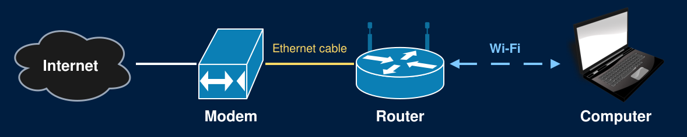
Internet Service Provider (ISP)
Connect customers to The Internet
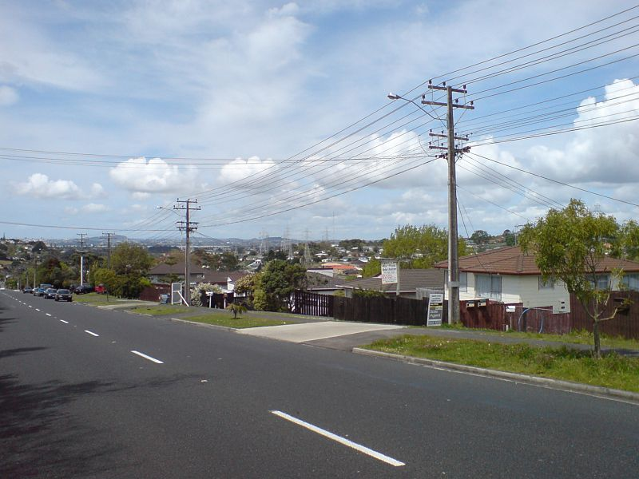
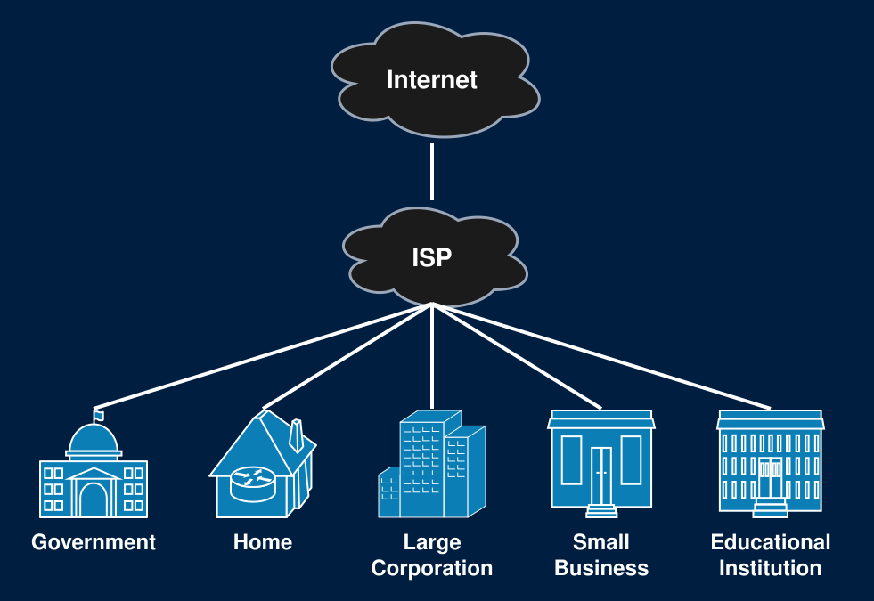
Tier 1 Networks
Tier 1 networks form the backbone of the Internet
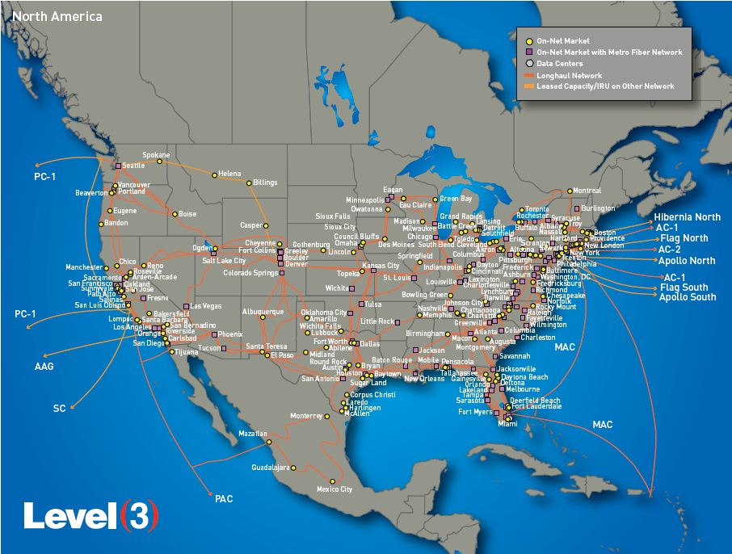
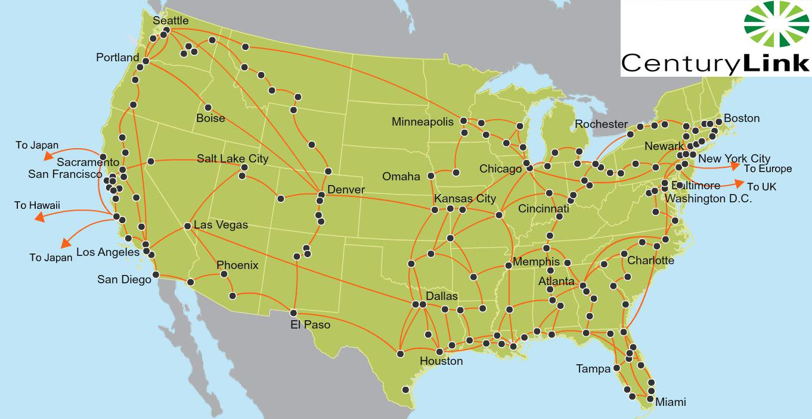
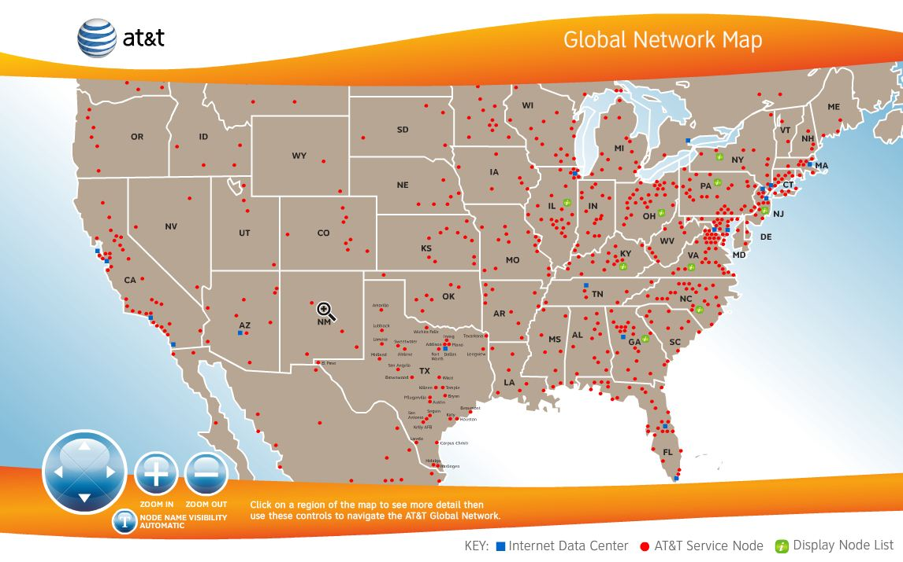
Data Centers Power Apps
It's all Cables!
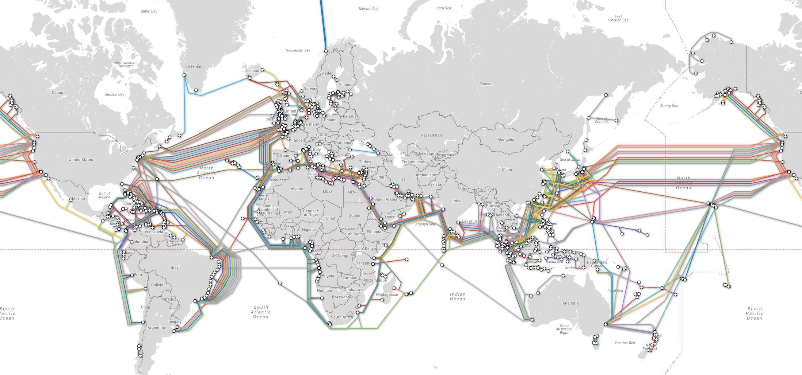
How do we use these cables?..
Internet Protocol
Internet Protocol (IP) Address
- Every device has an IP Address
- Use this address to send messages to that device
- Ex: 172.217.12.211
- Use DNS (Domain Name Server) to lookup IP address by domain name
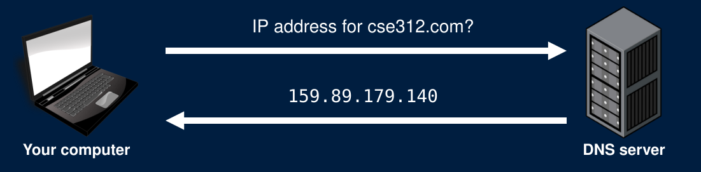
Data is sent over the Internet in packets/datagrams
Each packet contains headers containing information about the packet
Large messages are sent in multiple packets
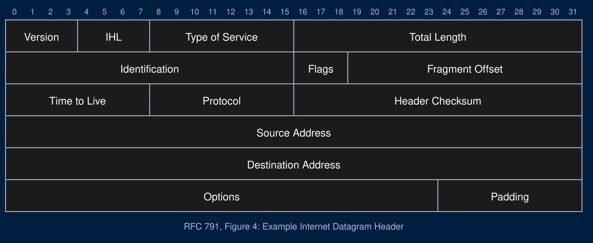
Routing Packets
- To route a packet through the Internet, a router will
- Check the destination IP address of the packet
- Send the packet to the next router on its path
- Fuhgettaboutit
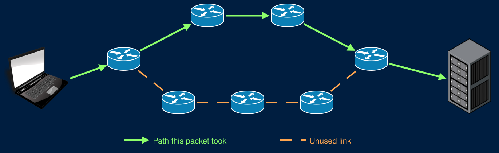
The Internet is Unreliable
Many factors cause packets to be dropped
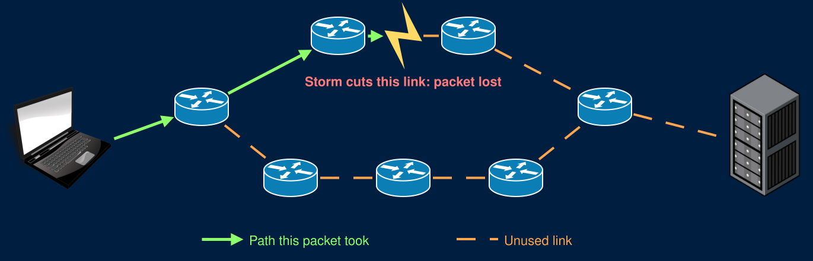
Transmission Control Protocol
Transmission Control Protocol (TCP)
- Makes the Internet reliable
- Detect and resend dropped packets
- Adds port numbers to identify specific programs
- Connect to a port number/IP address combination (TCP/IP)
- 127.0.0.1:8080
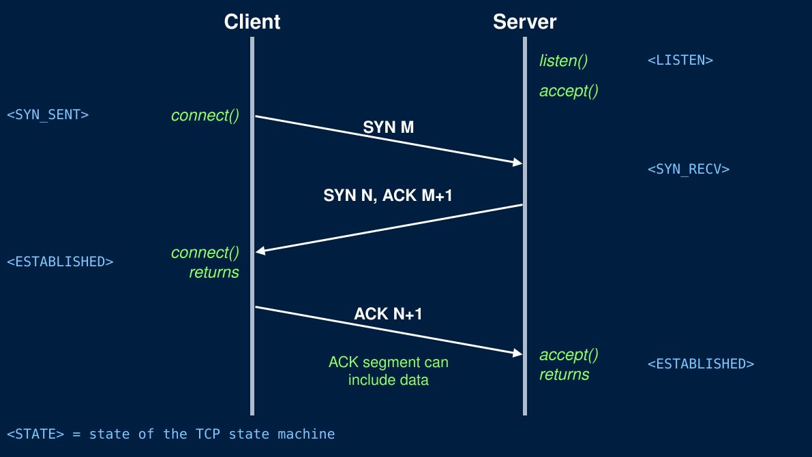
TCP/IP in CSE312
- Use libraries to do all this for us
- Assume TCP/IP works and that we have reliable communication over the Internet
- Freely send and receive messages (As bytes)
- Your code (HW) will start with HTTP
- Much deeper TCP/IP coverage, and more, in CSE489: Modern Networking Concepts